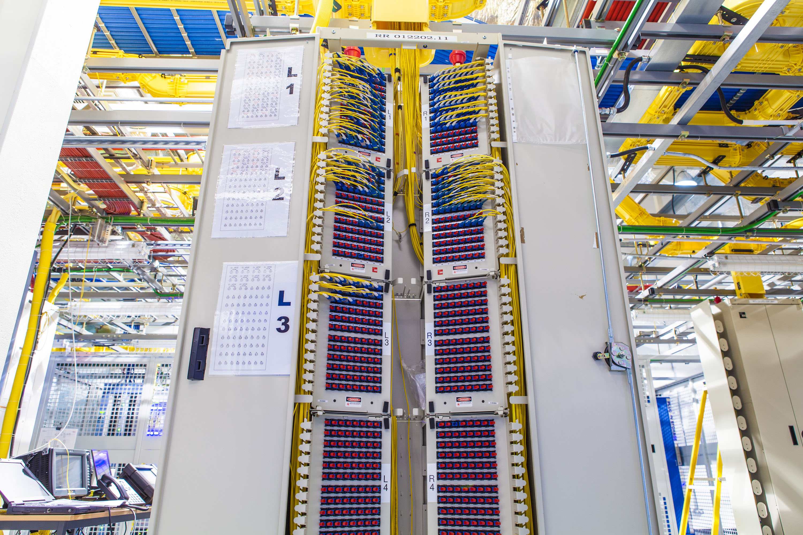
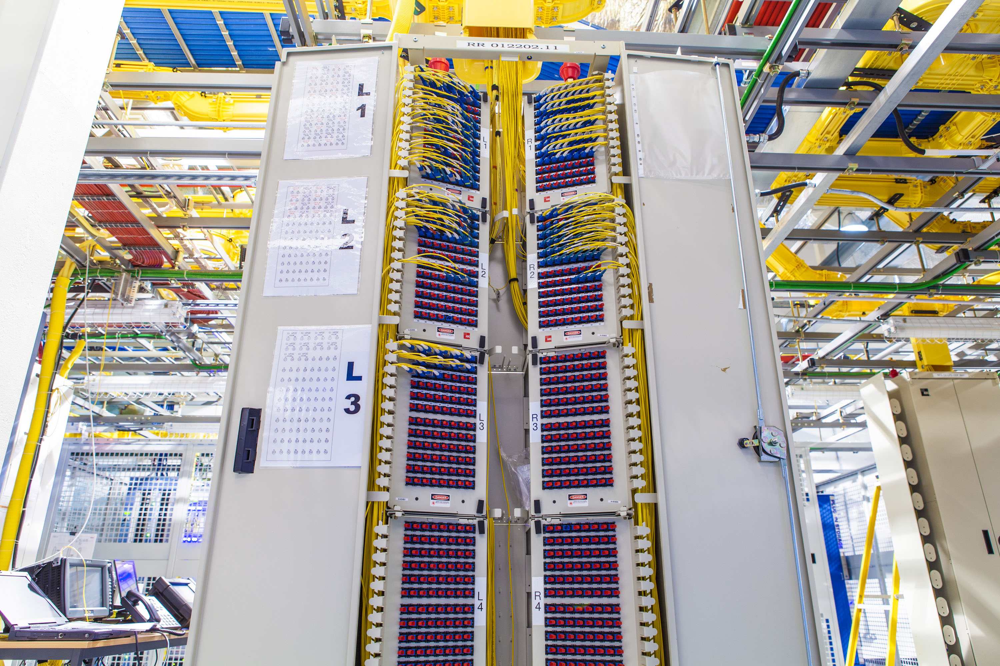

Why Choose UDCOMMS
With over 8 years of experience, we don’t just build networks—we maintain, upgrade, and protect them.
Local Expertise
Based in Auckland, we understand the terrain, the tech, and the telco landscape.
Smart Fibre Audit & Mapping
Our proprietary service helps ISPs and network owners identify inefficiencies, reduce costs, and optimise long-term performance.
Chorus Certified
We’re trusted to work on OFDF, AOFDF, and ZOFDF systems across New Zealand.
Future-Proof Installs
From MPO to high-density fibre, we build networks that scale with your needs.
Transparent Communication
We keep you informed at every step—no surprises, just solid delivery.
Technical Precision
Every install is measured, mapped, and tested—no guesswork, no shortcuts.
Future-Focused Vision
Smart Fibre Audits, bundled utility models, and scalable solutions—UDCOMMS is built for what comes next.
Let’s Build Your Next-Gen Network
From fibre rollouts to co-location upgrades, UDCOMMS is your trusted partner in connectivity.
Request a Quote
About UDCOMMS
Universal Data Communications Ltd (UDCOMMS) is a leading Auckland-based firm, dedicated to building, maintaining, and upgrading New Zealand's critical fibre infrastructure. With over 8 years of unparalleled experience, we are the trusted specialists powering the nation's digital future.
Our certified technicians bring a blend of precision engineering and extensive field-tested expertise to every project. From intricate structured cabling in commercial developments to advanced MPO testing in high-density co-location facilities, we ensure flawless execution. We hold comprehensive certifications across Chorus infrastructure (OFDF, AOFDF, ZOFDF systems) and utilize cutting-edge fibre diagnostics, including OTDR, iOLM, Fluke DSX, and meticulous end-face inspections, guaranteeing optimal network performance.
At UDCOMMS, our commitment extends beyond technical excellence. We champion transparent communication, rapid issue resolution, and innovative, scalable network design. Whether you're establishing foundational infrastructure for a new venture or seeking to resolve complex network challenges, we are your reliable partner, delivering robust and future-proof connectivity solutions that stand the test of time.

 
